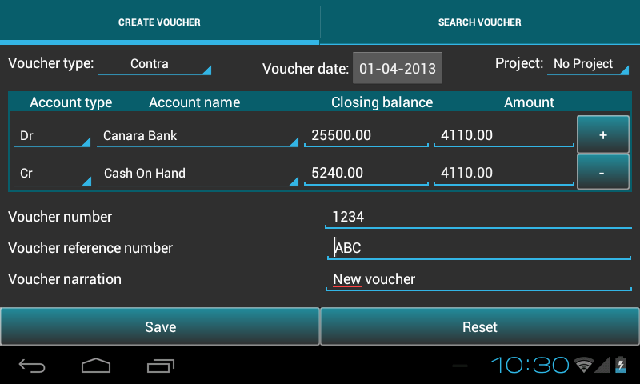

2.4. Transaction management¶
- This chapter provides guidence to add/search/edit/copy/delete transaction.
- Go to Master menu > Create voucher.
2.4.1. How to pass a transaction¶
Below table will help the user to understand, voucher types and their respective accounts as per rule:
Voucher type Accounts(dr) Accounts(cr) Contra subgroup(Cash,Bank) subgroup(Cash,Bank) Journal except subgroup(Cash,Bank) except subgroup(Cash,Bank) Receivable subgroup(Cash,Bank) except subgroup(Cash,Bank) Payment except subgroup(Cash,Bank) subgroup(Cash,Bank) Debit Note
- subgroup(Sundry Creditors for Expense
- ,Sundry Creditors for Purchase)
- group(Direct Income,Indirect Expense,
- Fixed Assets)
Credit Note
- groupname(Direct Income,Indirect
- Income)
subgroup(Sundry Debtors) Sales subgroup(Cash,Bank,Sundry Debtors) groupname(Direct Income,Indirect Income) Purchase
- groupname(Direct Expense,Indirect
- Expense)
subgroup(Sundry Creditors for Expense, Sundry Creditors for Purchase,Bank,Cash) Sales Return
- groupname(Direct Expense,Indirect
- Expense)
subgroup(Sundry Debtors) Purchase Returns
- subgroup(Sundry Creditors for Expense
- ,Sundry Creditors for Purchase)
- groupname(Direct Income,Indirect
- Income)
To record transaction in ABT, select Create voucher tab (see bellow fig.) and follow the below steps:
- The journal entry has been designed with user-friendliness in mind, with a default chart of accounts as a starting point. However, you have to create at least two accounts to start any transaction. It also offers every opportunity for creating your own user-defined variations.
- Select the mode of transaction from the list of voucher type. Mode of transaction can be Contra, Journal, Payment, Receipt, Debit Note, Credit Note, Sales, Sales Return, Purchase, Purchase Return.
- Voucher Date - date on which the transaction is happened.
- Note: ABT sets financial date as Voucher date, if no transaction is recorded before. If any transaction is previously recorded,it sets the voucher date of the previous transaction of the respective voucher type. If the date is changed, it updates the bydefault date or previous date with the new date.
- Project - The project module is organized with project-based work processes in mind. This module is also closely integrated with other modules in the program. The Project register can be opened by going to Ledger -Select project name- View.
- Select the Account name for Dr and Cr side. It will automatically show the closing balances for both the account name. Debit balance are highlighted in Green color and Credit balances are highlighted in Red color.
- Default focus helps you make voucher entry more efficient. For example, If you register a journal item in journal entry, the setting will guide you to the correct field. This is set based on the Accounting Principles, Debit what comes in; credit what goes out, Debit the receiver; Credit the Giver, Debit All Expenses and losses; Credit all incomes and gains.
- This also helps in selecting multiple debit or credit sides using plus button.
- Amount - enter the amount.
- Voucher number - Its a unique key for all the transaction.
- Voucher Reference number - Many transaction can have a single voucher reference number.
- Voucher Narration - Narration for a particular transaction.
- Press Save to save transaction.
After saving transaction it resets all the fields automatically.
You can change the voucher type if you want to make different voucher entries.
Press Reset to clear all fields.
To indicate the transfer of funds from cash to bank, bank to bank and bank to cash contra type is used.
2.4.2. Search/Edit/Clone/Delete Transaction¶
- To Edit/Clone/Delete transaction select Search voucher tab.


- Here Search option is given to search a particular transaction or group of transactions by Voucher reference number, Date, Narration, Voucher number, Account name or Voucher type.

- You have several opportunities to view figures based on period department and project accounting, key figures and more.
- Select option, give the input and press View button to view the transaction.
- Click table row to Edit/Copy/Delete the transactions.

- In Edit voucher, all fields are editable except voucher type and voucher number. Press Save to save the changes.

- Copy voucher duplicates information on an existing transaction, to create a new one with all the fields pre-filled for the same voucher type. There is an option to keep or change the existing field values. Note: Change the voucher number, as this is an unique parameter. Press Save to save the transaction.

- Delete voucher: Press Delete to delete the transaction.